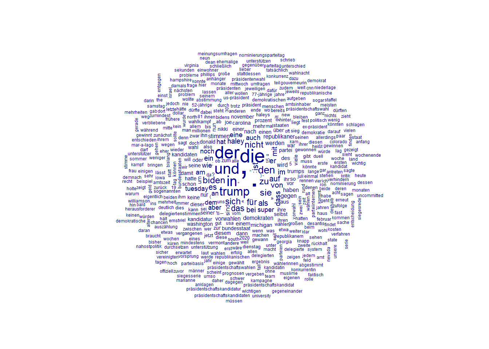
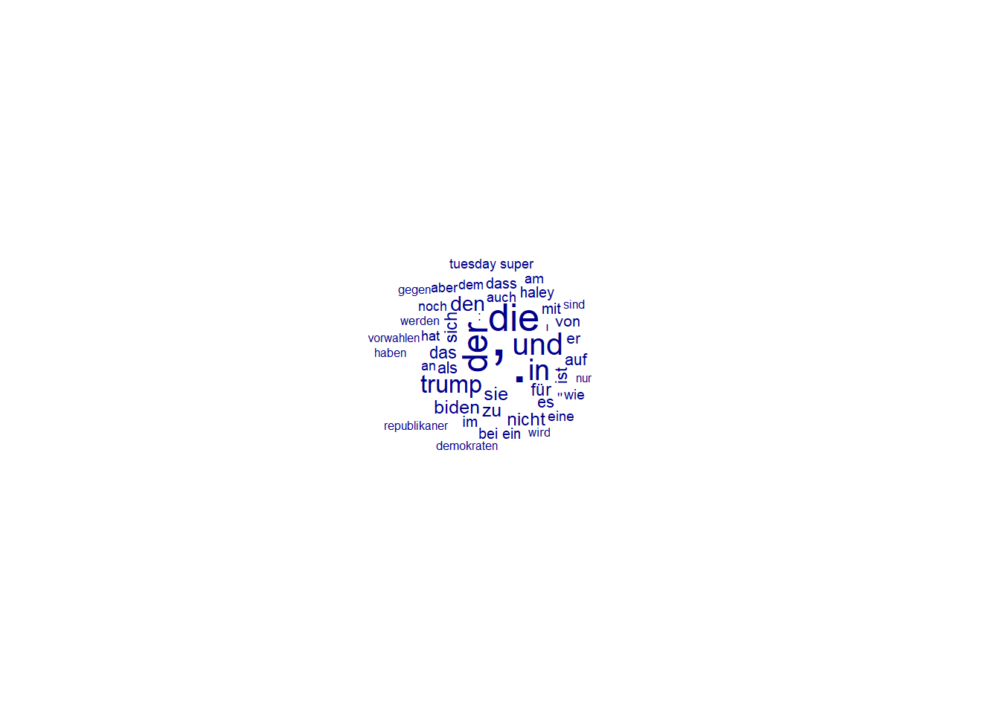

1+3[1] 4Dieses Tutorial dient als Dokumentation und Erweiterung zu dem, was in den Sitzungen in Bezug auf R erläutert wurde. Es soll dazu dienen, dass ihr die Inhalte nochmal in eigener Geschwindigkeit nacharbeiten könnt, zum Beispiel wenn es euch in der Sitzung zu schnell ging.
Am wichtigsten beim Programmieren-lernen ist, dass ihr es einfach mal ausprobiert und ein wenig experimentiert - ihr könnt nichts kaputt machen*. Bitte nutzt die hier angegeben Infos dann auch nur als Ausgangspunkt und informiert euch darüber hinaus gerne selbst. Eine riesige Stärke von R ist, dass es eine sehr grosse Community von Nutzerinnen und Nutzern gibt und ihr online zu allem und in allerlei Form Hilfe findet (Tutorials, Videos, etc.). Auch ChatGPT kann eine sehr grosse Hilfe sein. Entscheidet gerne selbst, welche Informationen euch persönlich am meisten helfen.
*eure Rohdaten solltet ihr trotzdem immer nochmal an einem zweiten Ort gespeichert haben.
15. April 2024
Diese Sitzung fokussiert auf die Arbeit mit R in RStudio und hat vier Ziele, die am Ende der Sitzung, spätestens bis zur nächsten Sitzung erfüllt sein sollten:
1) Ihr habt R und RStudio heruntergeladen und installiert
2) Ihr habt zentrale Elemente der Benutzeroberfläche kennengelernt
3) Ihr habt den Beispieldatensatz eingelesen und
4) Ihr habt ein Mass für Reliabilität für eine Beispielcodierung ausgerechnet.
Hier findet ihr auch nochmal das File, welches ich in der Sitzung am Montag genutzt habe, um euch die einzelnen Elemente in R direkt zu zeigen. Ich würde euch aber eher empfehlen die folgenden Ausführungen in diesem Tutorial durchzulesen, da ich dort alles nochmal ausführlich beschreibe. In dem File von Montag sind nur die einzelnen Code-Schnippsel selbst und weitere Erklärungen.
R bezeichnet eine Programmiersprache, die im Hintergrund auf eurem Computer eingebunden wird. RStudio ist die Benutzeroberfläche, mit der ihr R bedient, also Daten einlest und bearbeitet, statistische Analysen durchführt, Grafiken erstellt und vieles mehr. Sowohl R als auch RStudio sind kostenlos. Für eine erfolgreiche Installation sind vier Schritte in der genannten Reihenfolge notwendig.
a) Download von R
Download R für Mac mit Intel Prozessor
Welchen Prozessor hat mein Mac?
b) Installation von R auf eurem Gerät.
c) Download von RStudio
d) Installation von RStudio
Ihr werdet in der Folge nur mit RStudio arbeiten. Die Installation von R war wichtig da RStudio - welches als Benutzeroberfläche dient - im Hintergrund auf R zugreift.
Wir demonstrieren euch die wichtigsten Elemente in der Sitzung. Zur Wiederholung ist dieses Video-Tutorial hilfreich.
Um eure Analysen gemäss eurer Forschungsfrage durchführen zu können, müsst ihr die von euch gesammelten Daten auswerten (in dem Fall Zeitungstexte oder Pressemitteilungen). Hierfür existieren Statistikprogramme wie R. Um das zu machen, müssen wir die Daten als erstes jedoch erst einmal in RStudio einlesen.
Für das Tutorial habe ich einen Beispieldatensatz erstellt, anhand dessen ihr die relevanten Schritte üben könnt. Ihr könnt aber auch direkt eure eigenen Daten bzw. eure eigenen Daten einlesen.
Den Beispieldatensatz könnt ihr hier herunterladen.
Als nächstes öffnet ihr RStudio und erstellt ein neues Script in RStudio (File -> New File -> R Script). Das Script ist wie ein Do-File in Stata das Dokument wo euer Code geschrieben und gespeichert wird. Als erstes solltet ihr in dem neu geöffneten Script nun eine Überschrift einfügen, damit ihr wisst, um was es sich handelt. Es gibt zwei Arten, Eingaben in R zu machen. Normale Eingaben interpretiert R immer als Rechenoperationen oder Befehle, die ihr über Strg+Enter / Ctrl+Enter ausführen könnt (oder rechts oben im Editor-Fenster bei “Run”). Beispielsweise versteht R hier direkt, dass es sich um eine Rechnung handelt und wenn ihr die Teile markiert und STRG+Enter oder “Run” drückt, gibt RStudio in der Console unten links das entsprechende Ergebnis aus:
1+3[1] 4Wenn wir normalen Text eingeben (z.B. wie in Word), kommt es zu Fehlern, da dies keine eindeutigen Rechenoperationen oder Befehle für R sind und das Programm nicht erkennt, was es tun soll:
Hallo R, wie geht es dir?Error: <text>:1:7: unerwartetes Symbol
1: Hallo R
^Um daher “normalen” Text in R einzugeben, müsst ihr dem Programm mitteilen, dass der Text nicht als Befehl gedacht ist. Das funktioniert, in dem ihr vor den entsprechenden Text ein Hashtag setzt (#).
# Dies ist nur ein Text, kein Rechenbefehl für RDiese Funktion ist sehr wichtig um Notizen an euch selbst oder andere Leserinnen im R-Code zu hinterlassen. Ihr solltet Kommentare fleissig nutzen, damit ihr oder andere in der Gruppe später noch nachvollziehen können, was ihr gemacht habt. Ihr werdet in der Folge sehen, wie man so etwas einsetzt. Zunächst aber zur Überschrift zurück:
# Einlesen von Beispieldatensatz und Reliabilität der Coder bestimmen.Speichert diese Datei nun am besten direkt und wählt dafür einen Speicherort und Namen für diese Datei aus (File -> Save as…) - das ist ganz ähnlich wie bei Word oder Excel. Für einen guten Überblick macht es ausserdem Sinn, sich eine gute Datei Struktur/Organisation zu überlegen. RStudio speichert seine Scripte mit der Dateiendung “.R”. Hieran erkennt ihr im Explorer/Finder, dass es sich um ein Script für R-Code handelt und entsprechend mit RStudio ausgeführt werden kann (äquivalent zu einem .do-File bei Stata).
Nun lest ihr den Beispieldatensatz in R ein. Das kann R aber nicht einfach so, sondern es benötigt ein Paket besonderer Befehle, damit R weiss, wie es Excel Dateien korrekt in R einzulesen hat. Das benötigte Paket installiert und aktiviert ihr mit folgendem Code, den ihr einfach ein, zwei Zeilen unter eurer Überschrift in das R-Script einfügt. Beachtet auch, wie in diesem Beispiel Kommentare genutzt werden. Ihr könnt Kommentare in eine neue Zeile, aber auch direkt hinter einen Befehl schreiben. Sobald ein # kommt, ignoriert R den dahinterstehenden Text.
install.packages("readxl") # Paket zum Einlesen von Excel Dateien installieren
library(readxl) # Paket aktivierenEin Befehl funktioniert immer gleich. Der Befehl wird über den Namen aufgerufen. Oben sind es zwei Befehle. Einmal install.packages und einmal library. Danach folgt eine offene Klammer und in der Klammer wird geschrieben, auf was sich der Befehl beziehen soll. In beiden Fällen soll der Befehl auf das Paket readxl angewandt werden. Der erste Befehl sagt, dass das Paket installiert werden soll, der zweite Befehl, dass es aktiviert werden soll (bzw. der aktiven Bibliothek hinzugefügt wird). Eine geschlossene Klammer beendet den Befehl.
Die Installation sollte in dem Fall nur wenige Sekunden dauern und ein paar Warnungen in der Console ausgeben (das Fenster links unten). Sofern es keine Errors sind, können die Warnungen an dieser Stelle ignoriert werden.
Nun könnt ihr die Beispieldaten einlesen. Dafür müsst ihr die Exceldatei geschlossen haben und den Dateipfad zu der Exceldatei (also wo ihr data_example.xlsx gespeichert habt) kopieren. Ersetzt dann den untenstehenden fiktiven Dateipfad mit dem korrekten Dateipfad auf eurem Gerät. Bitte beachtet, dass ihr zum einlesen Slashes ( / ) benötigt. (Sollte es unter Windows nicht funktionieren, ersetzt den Slash mit zwei Backslashes ( \\ )).
data <- read_excel("C:/Users/Name/Documents/Studium/SoSe24/Berichterstattung_Primaries/data/data_example.xlsx")Ihr habt die Daten nun eingelesen und der Datentabelle den Namen data zugeordnet. Unter diesem Namen kann die Datentabelle wieder aufgerufen werden. Rechts oben in RStudio unter “Environment” seht ihr nun auch data aufgelistet. Per Doppelklick auf data im Environment könnt ihr die Tabelle ansehen - ähnlich wie bei Excel. Ihr könnt allerdings auf diese Art keine Änderungen an den Einträgen vornehmen.
Zwischenstand
Insgesamt solltet ihr nun folgenden Code in eurem R-Script haben. Dazu rechts im Environment der eingelesene Datensatz.
# Einlesen von Beispieldatensatz und Reliabilität der Coder bestimmen.
install.packages("readxl") # Paket zum Einlesen von Excel Dateien installieren
library(readxl) # Paket aktivieren
data <- read_excel("C:/Users/Name/Documents/Studium/SoSe24/Berichterstattung_Primaries/data/data_example.xlsx") # Einlesen der DatenTipp: Wenn man das erste Mal install.packages("") ausgeführt hat, kann man diesen Befehl auskommentieren (ein # an den Zeilenanfang), da dieses Paket nun auf dem Gerät installiert ist und man dies in Zukunft nicht mehr neu installieren muss und somit etwas Zeit spart. Es reicht dann, das benötigte Paket über den Befehl library() aufzurufen. (Es gibt noch eine elegantere Möglichkeit mit require(), wen das interessiert kann ja mal recherchieren).
Ausblick
Ihr könnt nun auch bereits mit den Daten spielen. Zum Beispiel könnt ihr per names(data) die Namen der Spalten des Datensatzes ausgeben lassen. Oder per table(data$outlet) eine Häufigkeitstabelle zu den Outlets in data.
names(data) [1] "nr" "link" "outlet" "date"
[5] "headline" "lead" "text" "article_type"
[9] "pics" "other_elements" "tone_trump_c1" "tone_trump_c2"
[13] "tone_trump_c3" table(data$outlet)
handel spon tages zon
3 5 3 4 Genauso könnt ihr euch die Zeichenanzahl der Überschriften ausgeben lassen und einen Mittelwert berechnen.
nchar(data$headline) # Anzahl Zeichen der jeweiligen Headlines [1] 46 66 42 62 30 70 41 49 27 41 60 48 18 30 21mean(nchar(data$headline)) # Mittelwert davon[1] 43.4Für die Anzahl der Wörter in einem Text müssen wir zunächst wieder ein Zusatzpaket installieren, da R von Haus aus hierfür keine Befehle kennt.
install.packages("stringr")
library(stringr)data$word_count <- str_count(data$text, "\\S+")
# Zählt die Anzahl der Wörter in der Spalte "text" und
# speichert das Ergebnis in einer neuen Spalte "word_count" ab.Wenn ihr den Datensatz nun anschaut, seht ihr das Ergebnis in einer neuen Spalte am Ende des Datensatzes.
Wichtig: Es ist sehr wichtig, nach jedem Befehl die korrekte Ausführung zu überprüfen, in dem man sich das Resultat anschaut und auf Plausibilität prüft. Andernfalls können sich Fehler einschleichen und die Analyse am Ende falsch sein. Den Fehler dann zu finden (sofern man ihn überhaupt bemerkt) ist deutlich mühsamer als während der Ausführung aufmerksam zu sein.
In diesem Fall erscheint das Ergebnis plausibel. Per Augenmass ist erkennbar, dass Text 5 länger ist als die anderen Texte und Text 1 und 4 am kürzesten sind. Manchmal reicht Augenmass allerdings nicht aus um ein Ergebnis zu prüfen. In dem Fall sollte geschaut werden, ob ihr mit anderen Methoden auf das identische Ergebnis kommt. Hier wollen wir die Wörter natürlich nicht manuell nachzählen, aber wir können einen der Texte in Word kopieren und schauen, ob Word die gleiche Anzahl für einen Text ausgibt.
Bevor man mit latenten Konzepten wie Emotionalität, Humor, etc. weiter arbeitet, ist es wichtig, sich zu vergewissern, dass die gemessenen Konzepte valide und reliabel sind. Hohe Reliabilität bedeutet, dass verschiedene Leute bei der Einschätzung von gegebenen Texten in Bezug auf ein Kozept (z.B. Humor) zu ähnlichen oder gleichen Ergebnissen kommen. Dies macht eine Analyse intersubjektiv nachvollziehbar und die Chance ist hoch, dass auch andere Coder in der Zukunft zu dem gleichen Ergebnis kommen. Reliabilität stellt daher ein wichtiges wissenschaftliches Gütekriterium dar.
Niedrige Reliabilität wiederum liegt vor, wenn sich verschiedene Leute bei gegebenen Texten nicht auf die Ausprägung eines Konzeptes einigen können. Wenn beispielsweise Coder A zu einem Text sagt, dass dieser humorvoll ist, Coder B hingegen sagt, dass der Text nicht humorvoll ist, dann können wir uns nicht sicher sein, welcher Fall nun zutrifft. Weder das eine, noch das andere scheint uneingeschränkt richtig zu sein. Es fehlt also eine reliable Einschätzung und es kann mit einer Analyse nicht fortgefahren werden.
Es gibt etliche Gründe, warum die Reliabilität möglicherweise unzureichend ist. Verschiedene Leute könnten (z.B. aus kulturellen, alters oder geschlechtlichen) Gründen Konzepte unterschiedlich wahrnehmen. Manche Konzepte sind schwierig klar abzutrennen oder schwierig zu verstehen. Auch Texte können schwierig sein was eine klare Einordnung betrifft. Teils existieren auch schlicht Missverständnisse und ein ausführlicheres Training der Coder kann abhilfe schaffen.
Während Validität primär über die Literatur und Theorie begründet wird, wird bei Inhaltsanalysen die Reliabilität häufig auch als Indikator für die Validität herangezogen. Obwohl hohe Reliabilität eine notwendige, aber keine hinreichende Bedingung für Validität ist, gibt es bei sozialwissenschaftichen (oft latenten) Konzepten oft keine “endgültige Wahrheit”. Daher wird, bei hoher Reliabilität im Urteil, die Meinung von Codern oft als endgültige Wahrheit definiert.
Es existieren unterschiedliche Masszahlen um die Reliabilität zwischen Codern quantitativ zu bestimmen. Eine sehr populäre Masszahl ist Krippendorff’s Alpha, welche auch wir verwenden. Krippendorff’s Alpha ist sehr flexibel was die Anzahl der Coder betrifft und kommt mit unterschiedlich skalierten Bewertungen zurecht. Auf einer Skala von 0 bis 1 gibt diese Masszahl an, wie gut die Urteile verschiedener Coder zu gleichen Sachverhalten (bei uns Texten) übereinstimmen. Eine 1 zeigt eine perfekte Reliabilität an, eine 0 die vollständige Abwesenheit von Reliabilität.
Für ein Mindestmass an wissenschaftlicher Güte und Reliabilität sollte Alpha mindestens Werte von 0,667 annehmen, besser wären Werte von 0,8 und höher.
Sofern Bewertungen verschiedener Coder zu mehreren Texten vorhanden sind, lässt sich Krippendorff’s Alpha in R leicht ausrechnen.
# Ein neues Paket wird für die Berechnung von Krippendorff's Alpha benötigt
install.packages("irr")
library(irr)# Die relevanten Spalten aus "data", also die Bewertungen der drei Coder
# werden in einer neuen Datentabelle abgespeichert. (Ihr seht dann rechts
# im Environment den neuen Datensatz mit dem namen "bewertungen")
bewertungen <- data[, c("tone_trump_c1","tone_trump_c2", "tone_trump_c3")]
# Berechnung von Krippendorff's Alpha
kripp.alpha(t(bewertungen)) Krippendorff's alpha
Subjects = 15
Raters = 3
alpha = 0.707 Mit dem Befehl kripp.alpha() wird Krippendorff’s Alpha berechnet. t() innerhalb von kripp.alpha()ist notwendig, um die Datentabelle bewertungen zu transponieren und sie in ein Format zu bringen, welches den Spezifikationen des Befehls kripp.alpha() entspricht.
Im Output von kripp.alpha() sehen wir drei Angaben. “Subjects” gibt an, wie viele Texte codiert wurden. “Raters” gibt an, wie viele Coder involviert waren und alpha gibt uns schliesslich das gewünschte Krippendorff’s Alpha für die Reliabilität der drei Coder zu diesen 15 Texten. In diesem fiktiven Beispiel ist alpha 0.707. Das ist eine ausreichende, wenngleich nicht optimale Reliabilität. Wenn ihr in die Daten schaut, könnt ihr sehen, dass die Coder mit ihrem Urteil bei drei von 15 Texten nicht übereingestimmt haben.
Tipp: Es ist geübte Praxis, alle Pakete, die im Verlauf eines Scriptes benötigt werden, ganz oben im Script aufzurufen. Das heisst, anstelle dass ihr nun die drei bisherigen Pakete (readxl, stringr, irr) jeweils an den Stellen installiert und aktiviert, an denen der relevante Code folgt, könnt ihr alle Pakete oben zu Anfang eures Scripts aufrufen. Sollte ein weiteres Paket im Verlauf nötig sein, könnt ihr es oben einfügen und ausführen. In der Zukunft habt ihr dann direkt zu Anfang einen Überblick über die benötigten Pakete und sie stören den Ablauf im weiteren Script nicht mehr.
22. April 2024
In dieser Sitzung wollen wir uns die Daten etwas genauer anschauen und Methoden kennen lernen, diese Daten quantitativ zu beschreiben. Das machen wir einerseits mit relevanten Masszahlen (z.B. Mittelwert) aber auch mit grafischen Darstellungen.
Das Lernziel für diese Sitzung ist, grundlegende Methoden der deskriptiven (=beschreibende) Statistik in R und RStudio kennenzulernen und auf eure Daten anwenden zu können. Ausserdem machen wir einen kurzen Abstecher in die Darstellung von Textdaten. Wir nutzen erneut die bisherigen Beispieldaten.
In einem ersten Schritt wollen wir grundlegende statistische Kennzahlen für unsere Daten ermitteln. Das ist in einem empirischen wissenschaftlichen Projekt fast immer der erste Schritt einer Analyse und dient dazu, eine grundlegendes Verständnis von den Daten zu bekommen: Was ist das Durchschnittsalter meiner Teilnehmenden, wie ist das Geschlechterverhältnis, wie sind die Bildungsabschlüsse verteilt, sind typische Fragen die bei einer Umfrage in einem ersten Schritt angeschaut werden. In eurem Kontext betreffen die grundlegenden, deskriptiven Fragen allerdings keine Teilnehmerinnen aus einer Umfrage, sondern eher eure Texte. Von Interesse sind hier z.B. Fragen wie: Wie lang sind meine Texte durchschnittlich, wie verteilen sich die Texte auf die verschiedenen Quellen, wie viele Texte enthalten ein bestimmtes Merkmal, etc.
Ich gehe nun davon aus, dass euch aus letzter Sitzung vertraut ist, wie Daten eingelesen werden und dass ihr den Beispieldatensatz unter dem gleichen Namen (“data”) eingelesen habt (er sollte dann rechts oben in eurem Environment aufgelistet sein).
Wenn ihr den Datensatz eingelesen habt, wendet bitte einmal folgenden Befehl an. Dieser stellt sicher, dass die Tabelle in einem normalen sogenannten data.frame Format gespeichert ist und wir alle Operationen ohne Probleme anwenden können:
data <- as.data.frame(data)Wie in den meisten Tabellen sind die einzelnen Beobachtungen in Zeilen und die Spalten bilden die verschiedenen Variablen. Wenn ihr euch den Datensatz data anschaut, seht ihr, dass es hier z.B. die Variablen “nr”, “link”, “outlet”, “date”, usw. gibt. Um in R den Mittelwert einer Variable (= Spalte in unserem Fall) auszurechnen gibt es den Befehl mean(). Diesem Befehl müssen wir nun ein Argument bzw. eine Bezugsmenge zuweisen, für die der Befehl (in dem Fall der Mittelwert) ausgerechnet werden soll. Wir wollen nun als erstes den Mittelwert für die Spalte “pics” ausrechnen. Versuchen wir es mit der zunächst intuitiven Lösung, nämlich dem Spaltennamen:
mean(pics)Error in eval(expr, envir, enclos): Objekt 'pics' nicht gefundenDas erzeugt einen Fehler, weil R das Objekt nicht kennt (beachte, es ist rechts oben im Environment selbst nicht aufgeführt). Da die Spalte “pics” Teil des grösseren Objekts data ist, müssen wir R auch mitteilen, dass “pics” in der Tabelle data zu finden ist. Das funktioniert mittel $, genauer mittels data$pics. Auf die Art wird R mitgeteilt, dass er im Objekt data schauen soll und dort die Spalte “pics” findet. Wir können das direkt testen:
data$pics [1] 2 1 4 1 1 0 1 0 1 7 1 1 1 1 1Ihr seht als Output den Inhalt der Spalte “pics” (ab und zu zu prüfen, ob die Werte mit der Tabelle data übereinstimmen ist immer sinnvoll. Damit wird vermieden, dass sich hier und da Fehler einschleichen, die man bei grösseren Datensätzen schnell übersehen kann). Auf die Art können wir den Inhalt aller Spalten aufrufen:
data$date [1] "2024-02-25 UTC" "2024-02-28 UTC" "2024-03-05 UTC" "2024-03-06 UTC"
[5] "2024-03-06 UTC" "2024-03-13 UTC" "2024-03-06 UTC" "2024-02-28 UTC"
[9] "2024-03-05 UTC" "2024-03-06 UTC" "2024-03-04 UTC" "2024-02-28 UTC"
[13] "2024-03-12 UTC" "2024-03-06 UTC" "2024-02-27 UTC"data$article_type [1] "agentur" "agentur" "normal" "agentur" "normal" "agentur" "normal"
[8] "agentur" "essay" "normal" "agentur" "agentur" "normal" "normal"
[15] "normal" Nice to know
Anstatt data$pics zu schreiben, könnt ihr auch data[,"pics"] schreiben. Das Ergebnis ist äquivalent. Der 2. Code ist etwas allgemeiner, da die eckigen Klammern ([]) der Code für eine Teilmenge sind. Hier wird entsprechend nach einer Teilmenge von data gefragt. In den Klammern wird dann auf Zeilen und Spalten verwiesen, von einem Komma getrennt. In unserem Beispiel bedeutet data[,"pics"] also, dass wir alle Zeilen auswählen (indem man nichts schreibt werden alle bestehenden Zeilen genommen), und dass wir die Spalte “pics” auswählen. Wenn ihr nur einzelne Zeilen auswählen wollt, könnt ihr das entsprechend vor dem Komma einfügen. Probiert es mal aus:
data[,"pics"] # hat das gleiche Ergebnis wie data$pics
data[1,"pics"] # hier wählen wir auch die Spalte "pics" aber nur die erste Zeile
data[1:5,] # Zeilen 1 bis 5 und alle Spalten
data[c(3,4,9),1] # Zeilen 3, 4 und 9 und nur Spalte 1 (anstatt dem Spaltennamen, kann man auch die Spaltennummer verwenden)
data[,c("pics","article_type")] # alle Zeilen aber 2 SpaltenIhr seht ausserdem, dass bei mehreren einzelnen Zeilen oder Spalten, diese Werte mit dem c()-Befehl kombiniert werden müssen. Damit wird eine Aufzählung markiert und R erkennt die Kommas richtig:
data[3,4,9, "pics"] Error in `[.data.frame`(data, 3, 4, 9, "pics"): unbenutztes Argument ("pics")Dieser Code ergibt einen Fehler, da R nur ein Komma erwartet, hier aber nun 3 Kommas sind und R nicht versteht, dass sich die ersten drei Werte alle noch auf die Zeilen berufen (alle Kommas sind für R gleich). Entsprechend müsst ihr markieren, dass die ersten drei Werte - in diesem Fall - eine Aufzählung von Zeilen darstellen:
data[c(3,4,9), c(8,9)] # Nur der Output von Zeilen 3, 4 und 9 und gleichzeitig nur Spalten 8 und 9 article_type pics
3 normal 4
4 agentur 1
9 essay 1Zurück zum Mittelwert, Median, etc.
Der Mittelwert für die Variable (= Spalte) “pics” kann entsprechend wie folgt ausgerechnet werden:
mean(data$pics) [1] 1.533333# oder
mean(data[,"pics"])[1] 1.533333Wir wissen nun, dass im Schnitt 1,53 Fotos pro Artikel enthalten sind. Nice. Genauso könnt ihr damit den Median oder beispielsweise die Standardabweichung einer Variable ausgeben lassen:
median(data$pics)[1] 1sd(data$pics)[1] 1.76743Das funktioniert aber nicht für die Spalte “article_type”, in welcher der Typ des Artikels codiert ist. Das liegt daran, dass für nominale Werte eine Angabe des Mittelwerts wenig Sinn ergibt (was ist der Mittelwert von “essay”, agentur” und “normal”?). Entsprechend bekommt ihr eine Fehlermeldung. Der Median hingegen lässt sich korrekterweise auch hier ausgeben.
mean(data$article_type)Warning in mean.default(data$article_type): Argument ist weder numerisch noch
boolesch: gebe NA zurück[1] NAmedian(data$article_type)[1] "essay"Eine weiterer hilfreicher Befehl ist, die Häufigkeit der unterschiedlichen Ausprägungen einer Variable anzeigen zu lassen. Hierfür ist der Befehl table() gedacht. Ihr seht schnell wie er funktioniert und was er als Resultat ausgibt:
table(data$article_type)
agentur essay normal
7 1 7 Die relativen Häufigkeiten bekommt hier mit folgender Erweiterung:
prop.table(table(data$article_type))
agentur essay normal
0.46666667 0.06666667 0.46666667 Hier fällt auf, dass die ausführliche Angabe der Nachkommastellen etwas unnötig ist. Das kann man vermeiden, indem man Ergebnisse in R auf die gewünschte Nachkommastelle rundet. Das funktioniert mit dem Befehl round(code,x), wobei code der Code oder Befehl ist, dessen Ergebnis ihr runden wollt und x die Anzahl an Ziffern ist, auf die ihr nach dem Komma runden wollt. Zum Beispiel:
round(prop.table(table(data$article_type)),2)
agentur essay normal
0.47 0.07 0.47 Mittelwerte für Teilmengen einer Variable
Oft ist es aber so, dass ihr nicht am Gesamtmittelwert interessiert seid, sondern zwischen Texttypen oder Quellen unterscheiden wollt. Wenn wir z.B. den Mittelwert an Bildern pro Artikel, getrennt nach Medienhaus bekommen wollen, müssen wir die Daten erst entsprechend aufsplitten.
Das geht auf zwei Arten. Ein Weg ist, den Datensatz in die Teile aufzusplitten, für die ihr jeweils den Mittelwert berechnen wollt. Anschliessend könnt ihr für jede Teilmenge den Mittelwert wie gewohnt berechnen. Dieser Weg hat ein zwei verschiedene Schritte, ist aber sehr intuitiv.
Für einen Überblick lasse ich ich mir zunächst aber nochmal die Namen der Medienhäuser geben:
data$outlet #listet alle auf [1] "spon" "spon" "spon" "spon" "spon" "zon" "zon" "zon"
[9] "zon" "handel" "handel" "handel" "tages" "tages" "tages" unique(data$outlet) # listet jeden Namen nur einmal auf[1] "spon" "zon" "handel" "tages" Nun erstelle ich eine erstelle eine Teilmenge der Haupttabelle data, getrennt nach den jeweiligen Medienhäusern. Das muss ich allerdings für jedes Medienhaus einzeln tun. Und zwar mit folgender Logik. Von meinem Datensatz data, nimm aus der Spalte “outlet” (also data$outlet) nur die Werte, die genau (==) “spon” entsprechen und weise sie einem neuen Objekt zu (in dem Fall spon_data). Entsprechend für die anderen Outlets.
spon_data <- subset(data, data$outlet == "spon")
zon_data <- subset(data, data$outlet == "zon")
handel_data <- subset(data, data$outlet == "handel")
tages_data <- subset(data, data$outlet == "tages")Ihr seht ausserdem, dass wir hier ein == anstatt einem einfachen “=” nutzen. Das hängt damit zusammen, dass “=” bereits vergeben ist und wie “<-” eine Zuweisung von Werten bedeutet. Unser herkömmliches Verständnis von “=” wird in R am ehesten durch == umgesetzt.
Wenn wir das gemacht haben, erscheinen rechts oben vier neue Objekte mit den eben vergebenen Namen. Diese können wir uns wie gewohnt anschauen und wir erkennen, dass es sich bei den neuen Tabellen um die gewünschten Teilmengen des Hauptdatensatzes handelt. Für jede dieser Teiltabellen können wir wie gewohnt den Mittelwert berechnen - unter Angabe des neuen Namens des jeweiligen Datensatzes:
mean(spon_data$pics)[1] 1.8mean(zon_data$pics)[1] 0.5mean(handel_data$pics)[1] 3mean(tages_data$pics)[1] 1Deutlich schneller, aber von den Schritten auf den ersten Blick nicht ganz so intuitiv ist folgender Code. Dieser wirft mit nur einer Zeile Code die Mittelwerte für alle vier Outlets aus:
#install.packages("dplyr") #Hastag am Anfang entfernen, falls ihr "dplyr" das erste Mal installiert
library(dplyr)
data %>% group_by(outlet) %>% summarise(mean_value = mean(pics))# A tibble: 4 × 2
outlet mean_value
<chr> <dbl>
1 handel 3
2 spon 1.8
3 tages 1
4 zon 0.5Nachdem ihr das Paket dplyr installiert und aktiviert habt, seht ihr, dass dieser Code das gleiche Resultat wie die Schritte oben hat - allerdings in nur einer Zeile Code. Ein wichtiges Take-Away hieraus: In R führen oft verschiedene Wege zum Ziel.
Eine kurze intuitive Erläuterung deiser Codezeile:
Zunächst nehmt ihr ganz normal data und verweist den Datensatz per %>% - dem sogenannten Pipe-Operator - an den nächsten Befehl. Das ist hier group_by(outlet) . Dieser Befehl erstellt für die zugewiesene Variable (hier “outlet”) die entsprechenden in ihr enthaltenen Gruppen. Wir wissen, dass “outlet” vier Ausprägungen, also Gruppen hat. Dieses Ergebnis, also alle vier Gruppen, werden dann mit einem erneuten Pipe-Operator an den nächsten Befehl weitergereicht: summarise(mean_value = mean(pics)). Der summarise()-Befehl bedeutet, dass für alle an ihn übergebenen Daten, in dem Fall die vier Outlets, die Befehle in seiner () angewendet werden. Hier ist das entsprechend mean_value = mean(pics). “mean_value” ist dabei ein von uns gewählter Name. Probiert es mal aus und ersetzt “mean_value” oben mit “hokuspokus”. Ihr werdet sehen, dass lediglich der Name der Spalte im Ergebnis geändert ist. “mean_value” ist damit lediglich der Name, unter welchem die Ergebnisse des folgenden Befehls gespeichert werden: mean(pics. Hier handelt es sich um den bereits bekannten Befehl für Mittelwert und diesem wird hier die Spalte “pics” anvertraut. Da heisst, mean() rechnet für die ihm überstellten Daten (also unsere vier Outlets) den Mittelwert der Spalte “pics” aus und speichert das Ergebnis unter “mean_value” (oder “hokuspokus”) ab.
Zusammengefasst erledigt der Code hier in einer Zeile, wofür wir davor 8 Zeilen benötigt haben. Ausserdem müsst ihr vor die einzelnen Zeilen (hier: “outlets” und “pics”) nicht jedes Mal erneut den Datensatz schreiben (also z.B.: data$outlets), weil R durch den allerersten Befehl der Zeile (data %>%) versteht, dass ihr euch nur auf diesen Datensatz bezieht. Das macht den Code etwas übersichtlicher und kürzer.
Wie immer, könnt ihr das Ergebnis auch einem neuen Objekt zuweisen, um es später wieder leicht aufrufen zu können:
outlet_means <- data %>% group_by(outlet) %>% summarise(mean_value = mean(pics))
outlet_means# A tibble: 4 × 2
outlet mean_value
<chr> <dbl>
1 handel 3
2 spon 1.8
3 tages 1
4 zon 0.5Hier werden die Mittelwerte der vier Outlets nun in der neuen Tabelle outlet_means gespeichert. Ihr seht, das dieses Objekt nun rechts oben aufgelistet ist.
Auf die gleiche Weise können wir nun auch die Anzahl an Bildern je Artikeltyp (= article_type) ausrechnen:
type_means <- data %>% group_by(article_type) %>% summarise(type_mean = mean(pics))Diese Ergebnisse erlauben nun schon erste interpretative Erkentnisse. Zum Beispiel benutzt das Handelsblatt in unserem kleinen Beispiel offenbar am häufigsten Bilder und Zeit Online am wenigsten. Genauso finden wir in Agenturmeldungen weniger Bilder als in normalen Nachrichtenbeiträgen.
Neben schlichten Kennzahlen bieten für bestimmte Daten aber auch grafische Darstellungen an. Wir lernen hier nur die absoluten Basics. R ist sehr vielseitig und mächtig und lässt auch abenteuerlichste und massgeschneiderte Darstellungen zu. Schaut zum Beispiel hier für einige wunderschöne Beispiele. In vielen Fällen erfordert das allerdings fortgeschrittene Kentnisse und geht damit über die Kurztutorials dieses Kurses hinaus. Wer sich aber dafür interessiert findet unter dem Stichwort ggplot2 (was ein eigenes Paket für R ist) eine ganzes Universum an Möglichkeiten, allerlei Daten auf alle erdenklichen Arten grafisch aufzubereiten.
Wir bleiben hier allerdings bei den Basics, die bereits recht hilfreich sein können:
pie(data$pics) # Tortendiagrammbarplot(data$pics) # BalkendiagrammBeide Darstellungen sind nicht sonderlich hilfreich. Häufig ist eine der zentralen Aufgaben der visuellen Darstellung, sich zu überlegen, ob die Daten schon im richtigen Format für eine sinnvolle Darstellungen sind. Das kann mühsam sein, insbesondere da R in Fällen wie oben keinen Fehler ausgibt. Die Darstellungen bzw. Befehle sind nämlich formal nicht falsch (z.B. seitens der Syntax), sie sind allerdings inhaltlich nicht sinnvoll bzw. haben schlicht keinen Mehrwert.
Welche der folgenden Darstellungen ist sinnvoll?
dotchart(table(data$pics))Warning in dotchart(table(data$pics)): 'x' ist weder Vektor noch Matrix: nutze
as.numeric(x)plot(table(data$pics))pie(table(data$pics))Sehr oft ist eine Darstellung der Rohdaten alleine nicht sinnvoll oder nicht gewünscht, sondern gewisse Bearbeitungsschritte sind notwendig, um die Daten in eine Form zu bringen, die finale Analyse durchführen zu können. Tatsächlich machen solche Datenbearbeitungsschritte meist den Grossteil der Analysearbeit in empirischen Projekten aus. Auch wir haben das rudimentär schon gemacht, nämlich als wir den Mittelwert nach Gruppen getrennt aufgeschlüsselt haben. Auch hier profitieren wir davon und können unsere Ergebnisse grafisch darstellen:
barplot(outlet_means$mean_value)
Diese Darstellung ist allerdings noch arg trostlos und auch unvollständig. Mit weiteren Argumenten können der Darstellung aber noch sinnvolle und notwendige Elemente hinzugefügt werden:
barplot(outlet_means$mean_value, names.arg = outlet_means$outlet, xlab = "Medienhäuser", ylab = "Durchschnittle Anzahl Bilder", col = heat.colors(4))Erinnerung Mit dem Befehl ? hier z.B.: ?barplot() könnt ihr die Hilfe für den jeweiligen Befehl aufrufen. Hier seht ihr, welche Argumente grundsätzlich für den jeweiligen Befehl möglich sind und in welcher Art und Wiese diese in dem Befehl aufgeschrieben werden müssen.
Schaut mal in die Hilfe und versucht eigenständig, einen Gesamttitel für das Balkendiagramm einzufügen.
Die Farben können übrigens auch von euch frei gewählt werden, z.B. in dem ihr das aktuelle Argument für Farben durch folgende Codes ersetzt (siehe HTML-Farbcode für feinstufige Farbauswahl):
barplot(outlet_means$mean_value, names.arg = outlet_means$outlet, xlab = "Medienhäuser", ylab = "Durchschnittle Anzahl Bilder", col = colors <- c("#FF0000", "#0000FF", "#008000","#FFA500")
)Genauso können für eine bessere Verständlichkeit auch die Namen der Medienhäuser in der entsprechenden Spalte noch ausgeschrieben werden. Dann werden sie in der Darstellung auch entsprechend angezeigt:
outlet_means$outlet <- c("Handelsblatt","Spiegel Online","Tagesschau","Zeit Online") #Achtung, auf richtige Reihenfolge achten!
barplot(outlet_means$mean_value, names.arg = outlet_means$outlet, xlab = "Medienhäuser", ylab = "Durchschnittle Anzahl Bilder", col = colors <- "lightblue")Die Masszahlen und Darstellungsformen soweit waren sehr allgemein und auf alle Arten von Daten anwendbar. Zuletzt wollen wir noch eine Darstellungsform kennen lernen, die spezifisch für Textdaten anwendbar ist: Wortwolken
Hierfür ist es hilfreich, ein Paket (bzw. zwei) zu installieren, welches spezifisch für die Arbeit mit Textdaten geschaffen wurde:
install.packages(c("quanteda", "quanteda.textplots"))Installiere Pakete nach 'C:/Users/Michael/AppData/Local/R/win-library/4.3'
(da 'lib' nicht spezifiziert)Paket 'quanteda' erfolgreich ausgepackt und MD5 Summen abgeglichen
Paket 'quanteda.textplots' erfolgreich ausgepackt und MD5 Summen abgeglichen
Die heruntergeladenen Binärpakete sind in
C:\Users\Michael\AppData\Local\Temp\RtmpyicrfM\downloaded_packageslibrary(quanteda)Warning: Paket 'quanteda' wurde unter R Version 4.3.3 erstelltPackage version: 4.0.2
Unicode version: 15.1
ICU version: 74.1Parallel computing: 8 of 8 threads used.See https://quanteda.io for tutorials and examples.library(quanteda.textplots)Warning: Paket 'quanteda.textplots' wurde unter R Version 4.3.3 erstelltDie Autoren dieses Pakets haben uns viel Arbeit erspart und machen es uns einfach: Um nun eine Wortwolke zu erzeugen sind nur drei einfache Schritte notwendig. Ihre Bedeutung habe ich in den Kommentaren im Code erläutert:
text_tokens <- tokens(data$text) #die Texte der Artikel werden in einzelne Wörter aufgetrennt
text_matrix <- dfm(text_tokens) #die aufgetrennten Wörter werden nun in einer speziellen Matrixform gespeichert (Document-Feature-Matrix DFM)
textplot_wordcloud(text_matrix) # aus dieser DFM wird eine Wortwolke kreiert
Das ist schon ganz cool, aber auch ein wenig unübersichtlich. Wir wollen die Wolke nun auf die 50 häufigsten Wörter (hier: tokens) limitieren Das ist durch quanteda einfach möglich, da es im Befehl für die Wordcloud ein Argument gibt, die Grösse zu beschränken (siehe ?textplot_wordcloud()):
textplot_wordcloud(text_matrix, max_words = 50)
Nun ist diese Darstellung allerdings nicht sehr hilfreich, da wir lauter inhaltslose Füllwörter wie “der”, “die”, “und”, etc. haben. Solche inhaltslose Füllwörter werden als “Stopwords” bezeichnet. Für verschiedene Sprachen sind hier in dem Paket quanteda bereits Listen hinterlegt, die festlegen welche Wörter als solche stopwords zählen (wir können solche Listen auch selbst definieren). Diese existierende Liste können wir uns auch anzeigen lassen:
stopwords("german") [1] "aber" "alle" "allem" "allen" "aller" "alles"
[7] "als" "also" "am" "an" "ander" "andere"
[13] "anderem" "anderen" "anderer" "anderes" "anderm" "andern"
[19] "anderr" "anders" "auch" "auf" "aus" "bei"
[25] "bin" "bis" "bist" "da" "damit" "dann"
[31] "der" "den" "des" "dem" "die" "das"
[37] "daß" "derselbe" "derselben" "denselben" "desselben" "demselben"
[43] "dieselbe" "dieselben" "dasselbe" "dazu" "dein" "deine"
[49] "deinem" "deinen" "deiner" "deines" "denn" "derer"
[55] "dessen" "dich" "dir" "du" "dies" "diese"
[61] "diesem" "diesen" "dieser" "dieses" "doch" "dort"
[67] "durch" "ein" "eine" "einem" "einen" "einer"
[73] "eines" "einig" "einige" "einigem" "einigen" "einiger"
[79] "einiges" "einmal" "er" "ihn" "ihm" "es"
[85] "etwas" "euer" "eure" "eurem" "euren" "eurer"
[91] "eures" "für" "gegen" "gewesen" "hab" "habe"
[97] "haben" "hat" "hatte" "hatten" "hier" "hin"
[103] "hinter" "ich" "mich" "mir" "ihr" "ihre"
[109] "ihrem" "ihren" "ihrer" "ihres" "euch" "im"
[115] "in" "indem" "ins" "ist" "jede" "jedem"
[121] "jeden" "jeder" "jedes" "jene" "jenem" "jenen"
[127] "jener" "jenes" "jetzt" "kann" "kein" "keine"
[133] "keinem" "keinen" "keiner" "keines" "können" "könnte"
[139] "machen" "man" "manche" "manchem" "manchen" "mancher"
[145] "manches" "mein" "meine" "meinem" "meinen" "meiner"
[151] "meines" "mit" "muss" "musste" "nach" "nicht"
[157] "nichts" "noch" "nun" "nur" "ob" "oder"
[163] "ohne" "sehr" "sein" "seine" "seinem" "seinen"
[169] "seiner" "seines" "selbst" "sich" "sie" "ihnen"
[175] "sind" "so" "solche" "solchem" "solchen" "solcher"
[181] "solches" "soll" "sollte" "sondern" "sonst" "über"
[187] "um" "und" "uns" "unse" "unsem" "unsen"
[193] "unser" "unses" "unter" "viel" "vom" "von"
[199] "vor" "während" "war" "waren" "warst" "was"
[205] "weg" "weil" "weiter" "welche" "welchem" "welchen"
[211] "welcher" "welches" "wenn" "werde" "werden" "wie"
[217] "wieder" "will" "wir" "wird" "wirst" "wo"
[223] "wollen" "wollte" "würde" "würden" "zu" "zum"
[229] "zur" "zwar" "zwischen" Diese Wöter wollen wir nun aus unseren Texten entfernen. Das geht wie folgt. Wir fangen dabei wieder bei unseren Ausgangsdaten an und der Code ist fast identisch zu davor. Mit einem kleinen Zusatz. Schau gerne ob du ihn entdeckst und erraten kannst, was dort passiert und auch, was ich sonst noch geändert habe und warum:
text_tokens <- tokens(data$text, remove_punct = TRUE)
text_tokens <- tokens_remove(text_tokens, pattern = stopwords("german"))
text_matrix <- dfm(text_tokens)
textplot_wordcloud(text_matrix, max_words = 50)Spannend wäre auch, als nächstes zu schauen, ob sich die häufigsten Wörter in den Texten je nach Medienhaus unterscheiden. Hat jemand eine Idee wie man das mit den Methoden, die wir bisher kennen gelernt haben grafisch analysieren könnte?
Ich kann euch sehr empfehlen, euch mal die Beispielseite von quanteda anzuschauen. Abseits der Wortwolke, sind hier noch weitere wirklich hilfreiche Darstellungsformen gut verständlich aufbereitet. Insgesondere die Frequency Plots, siehe hier, könnten für die ein oder andere Auswertung möglicherweise interessant sein (dort wird dann auch auf das oben bereits kurz erwähnte Paket für grafische Darstellungen ggplot2 zurückgegriffen).
Nice to know:
Die Art und Weise wie in der Textverarbeitung Texte oft gespeichert werden - auch bei uns oben - ist ziemlich raffiniert. Schaut euch dazu die Document-Frequency-Matrix einmal an. Fällt euch was auf?
text_matrixDocument-feature matrix of: 15 documents, 2,638 features (88.24% sparse) and 0 docvars.
features
docs frühere us-präsident donald trump vorwahl präsidentschaftskandidatur
text1 1 1 1 5 2 1
text2 0 1 1 10 2 0
text3 0 0 3 13 3 1
text4 1 0 2 10 0 0
text5 0 0 2 29 0 0
text6 0 1 1 7 0 0
features
docs republikaner bundesstaat south carolina
text1 4 4 6 6
text2 5 2 2 2
text3 4 2 0 1
text4 2 3 1 1
text5 2 1 0 1
text6 3 2 0 0
[ reached max_ndoc ... 9 more documents, reached max_nfeat ... 2,628 more features ]13. Mai 2024
In der heutigen Sitzung schauen wir uns an, wie statistische Tests in R durchgeführt werden können. Dabei wird nicht oder kaum darauf eingegangen, wie diese Tests mathematisch funktionieren oder in welchen Situationen und unter welchen Bedingungen sie geeignet sind. Schaut dafür bitte in die Aufzeichnungen oder Unterlagen eurer Methoden/Statistik-Kurse.
Den Code für die Beispiele in der Sitzung am Montag findet ihr hier. Euch fehlt hier allerdings der 2. Datensatz, den ich in der Sitzung verwendet habe, sodass ihr nicht alle Befehle daheim ausführen könnt. Außerdem ist der Code nicht gut kommentiert, was es schwierig macht, zu verstehen was passiert. Will sagen: Der Code aus der Sitzung ist vermutlich nicht sehr hilfreich. Mit folgendem Tutorial erhaltet ihr allerdings alle notwendigen Erklärungen, um die besprochenen Tests auch auf eure Daten anzuwenden (sofern sinnvoll!).
Generell gilt (grob gesagt) bei einem empirischen Projekt bzw. der statistischen Auswertung folgende Prozessreihenfolge:
1) Was ist mein Forschungsinteresse, meine Forschungsfrage und/oder meine Hypothese(n)
2) Welches Analyse (z.B. statistischer Test) beantwortet meine Forschungsfrage oder Hypothese(n)
3) Sind die Bedingungen für die Analyse/den Test gegeben.
4) Analyse/Test durchführen
Punkt 1 ist für euch meist bereits geklärt bzw. das wurde letztes Semester behandelt. Zu Punkt 2 und 3 habt ihr etwas in euren Methoden/Statistikkursen gelernt, diese solltet ihr nötigenfalls nochmals konsultieren. Punkt 4 wird euch hier beigebracht. Als Forschungsfrage interessiert uns für dieses Tutorial, ob sich die Anzahl an Fotos in den Artikeln eines Outlets (z.B. Handelsblatt) von der Anzahl an Fotos in Artikeln anderer Outlets unterscheidet. In einem/eurem richtigen Projekt solltet ihr Punkte 2 und 3 durchführen. Für dieses Tutorial überspringen wir diese Punkte und legen uns auf den Mittelwertvergleich (t-Test) fest. Ob dieser Test für euch in Frage kommt, hängt von eurer Forschungsfrage ab und der Art der Daten die ihr habt. Das solltet ihr selbst einschätzen können.
Um die Durchführung in R zu lernen, arbeiten wir erneut mit unserem Testdatensatz. Bitte lest diesen erneut in R ein. Wer sich nicht erinnert wie das geht, findet die Anleitung oben in den Ausführungen der letzten zwei Sitzungen.
Der t-Test ist ein häufig angewandter statistischer Test um zu prüfen, ob sich ein Mittelwert einer Variable von einem anderen Wert (z.B. der Mittelwert einer anderen Variable oder von einem festen Wert) unterscheidet. Der t-Test ist beispielsweise gefragt, wenn man testen möchte, ob sich die mittlere Körpergröße einer Gruppe von Menschen von der Durchschnittskörpergröße einer anderen Gruppe unterscheidet. In unserem Kontext wäre ein Anwendungsgebiet, ob sich die mittlere Anzahl an Nennungen von “Trump” in Artikeln eines Zeitungshauses von der mittleren Anzahl an Nennungen von “Trump” in Artikeln eines anderen Zeitungshauses unterscheiden.
Für unsere Frage interessieren uns als Variable die Anzahl der Fotos. Und die Gruppen, zu denen wir die Anzahl an Fotos vergleichen wollen, sind vier unterschiedliche Outlets (hier: Spiegel Online, Zeit Online, Handelsblatt und Tagesschau). Zu Beginn ist es immer hilfreich, sich einen Überblick zu verschaffen. Dazu gehört zunächst, sich die Mittelwerte der Anzahl der Fotos pro Artikel anzuschauen.
Die durchschnittliche Anzahl an Fotos insgesamt lässt sich leicht ausrechnen, das haben wir bereits oben gelernt:
mean(data$pics)[1] 1.533333Jetzt wollen wir uns anschauen, was die Durchschnittswerte für die vier Outlets sind. Es gibt unterschiedliche Wege, den Mittelwert für mehrere Gruppen zu berechnen. Eine der elegantesten Lösungen ist (dafür braucht ihr das Package dplyr):
outlet_means <- data %>% group_by(outlet) %>% summarise(mean_value = mean(pics))
outlet_means# A tibble: 4 × 2
outlet mean_value
<chr> <dbl>
1 handel 3
2 spon 1.8
3 tages 1
4 zon 0.5Wir sehen, dass es erhebliche Unterschiede in der Anzahl der Fotos pro Artikel zwischen den vier Outlets gibt. Jetzt wollen wir aber wissen, ob der Unterschied in der Anzahl der Fotos zwischen Handelsblatt und dem Rest auch statistisch signifikant ist.
Dazu wenden wir nun schon den t-Test an. Dieser wird mit dem Befehl t.test() in R aufgerufen. Damit R weiss, welche Mittelwerte es vergleichen soll, müssen wir diese R mitteilen. Die Logik ist dabei t.test(Werte der Variable von Gruppe A, Werte der Variable von Gruppe B). Die Variable ist die Anzahl der Fotos und die Gruppen sind unsere Outlets.
Dazu teilen wir unsere Daten in die beiden Gruppen, die uns interessieren. Einmal alle Artikel vom Handelsblatt und das andere Mal der Rest. Das geht mit dem subset()-Befehl:
handel_data <- subset(data, data$outlet=="handel")
# Mit diesem Befehl werden alle Daten, die in der Spalte "outlet" den Wert "handel" haben in eine neue Tabelle namens "handel_data" geschrieben
no_handel_data <- subset(data, data$outlet!="handel")
# Das "!=" bedeutet "nicht". Hier werden also alle Daten, die in der Spalte "outlet" NICHT den Wert "handel" haben in eine neue Tabelle namens "no_handel_data" geschrieben. Nun können wir schon den t-Test auf die Daten beider Gruppen anwenden:
t.test(handel_data$pics, no_handel_data$pics)
Welch Two Sample t-test
data: handel_data$pics and no_handel_data$pics
t = 0.9067, df = 2.0892, p-value = 0.4567
alternative hypothesis: true difference in means is not equal to 0
95 percent confidence interval:
-6.520178 10.186844
sample estimates:
mean of x mean of y
3.000000 1.166667 Alternativ kann man sich die Befehle subset() sparen, und die Definition der Gruppen (=> Teilmengen), also Artikel von Handelsblatt vs. Artikeln von allen anderen direkt im t-test-Befehl machen. Das geht so:
t.test(data$pics[data$outlet!="handel"], data$pics[data$outlet=="handel"])
Welch Two Sample t-test
data: data$pics[data$outlet != "handel"] and data$pics[data$outlet == "handel"]
t = -0.9067, df = 2.0892, p-value = 0.4567
alternative hypothesis: true difference in means is not equal to 0
95 percent confidence interval:
-10.186844 6.520178
sample estimates:
mean of x mean of y
1.166667 3.000000 Hinweis: In aller Regel dauert es in einem realen Projekt deutlich länger, die Daten in die Form zu bekommen, die es erlaubt den angestrebten Test durchzuführen, als die Dauer (oder Kompliziertheit) des Tests selbst. Oft muss man Daten erst bereinigen oder umformen, was teils sehr aufwendig ist. Der finale Test geht dann oft sehr schnell und einfach. Also: Nicht verunsichern lassen, wenn ihr viel Zeit darauf verwendet, die Daten in eine Form zu bekommen, die notwendig ist den t-Test (oder andere Tests) anzuwenden.
Zurück zum Beispiel. Im Ergebnis des t.test()-Befehls bekommt man nun ein mehrzeiliges Ergebnis. Das wird wie folgt interpretiert:
In der ersten Teile seht ihr nochmals den Code, der genutzt wird, die Daten für den t-Test zu definieren, also die beiden Gruppen.
In den letzten zwei Zeilen seht ihr den Mittelwert für die beiden Gruppen. x ist die linke Gruppe, also alle Outlets ohne Handelsblatt. Demnach haben die drei Outlets (Spiegel Online, Zeit Online und Tagesschau) einen Mittelwert von 1,1667 Bilder pro Artikel. Das Handelsblatt hingegen 3 (diesen Wert haben wir oben schon herausgefunden, es ist immer gut, Ergebnisse auf Plausibilität zu prüfen und sie idealerweise gegen zu checken).
Der p-Wert in Zeile 2 ganz rechts gibt euch schliesslich an, ob sich die Mittelwerte der beiden Gruppen statistisch unterscheiden. Es handelt sich um einen statistisch signifikanten Unterschied, wenn p < 0,05. Mit einem p-Wert von 0,457 handelt es sich bei der Anzahl an Bildern also nicht um einen statistisch signifikanten Unterschied zwischen den beiden Gruppen.
Das Ergebnis mag verblüffen, da im Handelsbaltt im Mittel mehr als doppelt so viele Fotos sind als in allen anderen Outlets. Allerdings haben wir in dem Testdatensatz auch nur sehr wenige Daten. Damit ist es schwer eine robuste Aussage über die statistische Signifikanz des Unterschieds zu treffen. Bei kleinen Stichproben kann die Varianz stark schwanken, was die Zuverlässigkeit eines t-Tests beeinträchtigt. In solchen Fällen ist es sinnvoll, mit mehr Daten die Stichprobengrösse zu erhöhen, um eine genauere Einschätzung der Mittelwertunterschiede der beiden Gruppen zu erhalten. In unserem Fall konkret sind die Unterschiede in der durchschnittlichen Anzahl an Fotos zwischen den beiden Gruppen recht gross (der eine Wert ist mehr als doppelt so gross wie der andere). Es ist daher sehr wahrscheinlich, dass die Unterschiede bei grösserer Stichprobengrösse signifikant werden (d.h., dass der p-Wert dann kleiner als 0,05 ist). Das ist aber keinesfalls garantiert. Es kann durchaus sein, dass wir zufällig ein paar Artikel aus dem Handelsblatt ausgefwählt haben, die viele Fotos beinhalten. Möglicherweise haben viele andere keine oder nur sehr wenige Fotos. Daher sollte man mit Prognosen vorsichtig sein und sich nur auf tatsächliche Tests mit tatsächlichen Daten verlassen.
Anstatt zu testen, ob ein Unterschied zwischen Variablen besteht, gibt es eine Reihe weiterer Testverfahren den Zusammenhang von Variablen zu prüfen. Eine solche Methode ist, die Korrelation zwischen zwei oder mehr Variablen zu testen. Es gibt drei Korrelationstypen: a) Positive Korrelation: Wenn die eine Variable steigt, steigt auch die andere, b) negative Korrelation: Wenn die eine Variable steigt, sinkt die andere, c) Keine Korrelation: Es gibt keinen erkennbaren Zusammenhang zwischen den Variablen. Man könnte beispielsweise untersuchen, ob zwischen der Körpergröße von Menschen und deren Gewicht ein Zusammenhang besteht. Da wir wissen, dass bei steigender Körpergröße das Gewicht in der Tendenz steigt, spricht man hier von einer positiven Korrelation.
Wie den t-Test, kann man die Korrelation in R leicht und mit nur einem Befehlt testen. Der Befehl hierfür ist cor.test() und die Syntax ist identisch zu der des t.test(). Aber auch hier ist es nochmal wichtig zu sagen, dass ihr den Korrelationstest nur anwenden solltet, wenn es eure Hypothese oder Forschungsfrage erforderlich macht. Das heißt, ihr startet bei der Forschungsfrage und schaut, welcher Test notwendig ist. Diese Arbeit kann in einem Tutorial nicht geleistet werden, da eure Forschungsfragen individuell sehr unterschiedlich sind, was auch eure Anforderungen an die Methodik unterschiedlich macht.
Zur Illustration wählen wir hier hingegen eine hypothetische Forschungsfrage bzw. eine Hypothese, die sich mit unseren Beispieldaten prüfen lässt: Hängt die Länge der Überschrift, mit der Länge des Artikels zusammen? Unsere Hypothese wäre, dass hier kein Zusammenhang besteht, da Überschriften gewöhnlich sehr ähnlich und daher von ähnlicher Länge sind, ganz unabhängig, wie lang der Artikel ist.
Um diese Hypothese zu prüfen benötigen wir zwei Variablen: Die Längen der Überschriften und die Längen der Artikeltexte. Wir haben zwar die Überschriften und Texte, aber nicht die Länge dieser beiden Variablen. Das heißt, wir müssen diese Information erst aus den Überschriften und Texten generieren. Das ist ein gutes und praxisnahes Beispiel, welches zeigt, dass der Weg, Daten in das benötigte Format zu bekommen, beträchtlich länger und aufwendiger sein kann als der finale Test.
Um die Länge der beiden Variablen headline und text zu bestimmen, benötigen wir den Befehl nchar(). Wie der Name insinuiert, bestimmt nchar() die Länge von Texten (Variablen vom Type character):
data$length_head <- nchar(data$headline)
data$length_text <- nchar(data$text)Nachdem wir in zwei (zugegeben einfachen) Schritten die Textlänge der beiden Variablen bestimmt haben, können wir direkt den Korrelationstest mit nur einer Zeile Code darauf anwenden. Die Syntax ist quasi identisch zu der des t-Tests.
cor.test(data$length_head, data$length_text)
Pearson's product-moment correlation
data: data$length_head and data$length_text
t = -1.5046, df = 13, p-value = 0.1563
alternative hypothesis: true correlation is not equal to 0
95 percent confidence interval:
-0.7495077 0.1584097
sample estimates:
cor
-0.3851033 Auch die Interpretation ist ähnlich zum t-Test. In der untersten Zeile wird der Korrelationskoeffizient angezeigt. Dieser ist mit -0,39 negativ. Das heisst, wenn die Überschriften länger werden, werden die Artikeltexte in der Tendenz kürzer. Allerdings ist der p-Wert (Zeile 2) mit 0,16 größer als 0,05. Das heisst, dass kein signifikanter Zusammenhang zwischen den Längen der beiden Variablen besteht. Unsere Hypothese, dass es keinen Zusammenhang zwischen der Länge der Überschrift und der Länge des Artikeltextes gibt kann daher vorläufig bestätigt werden. Auch hier haben wir allerdings noch sehr wenig Daten. Idealerweise wären für einen aussagekräftigeren Test mehr Daten gefordert.
Bitte informiert euch für die Auswertung eurer Daten, welcher Test bzw. welche Analyse für eure Forschungsfrage sinnvoll bzw. gefordert ist. Hier wurden mit dem t-Test und dem Korrelationstest zwei Verfahren gezeigt. Diese können für eure Fragen relevant sein, das muss aber nicht so sein. Nicht ideal wäre, wenn ihr einen Test anwendet, der für eure Forschungsfrage keine Relevanz hat, bzw. unsinnig ist. Konsultiert im Zweifel eure Aufzeichnungen der Methoden und Statistik-Veranstaltungen, fragt eure Kommilitoninnen oder uns.